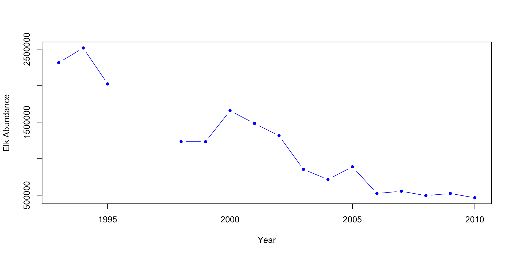
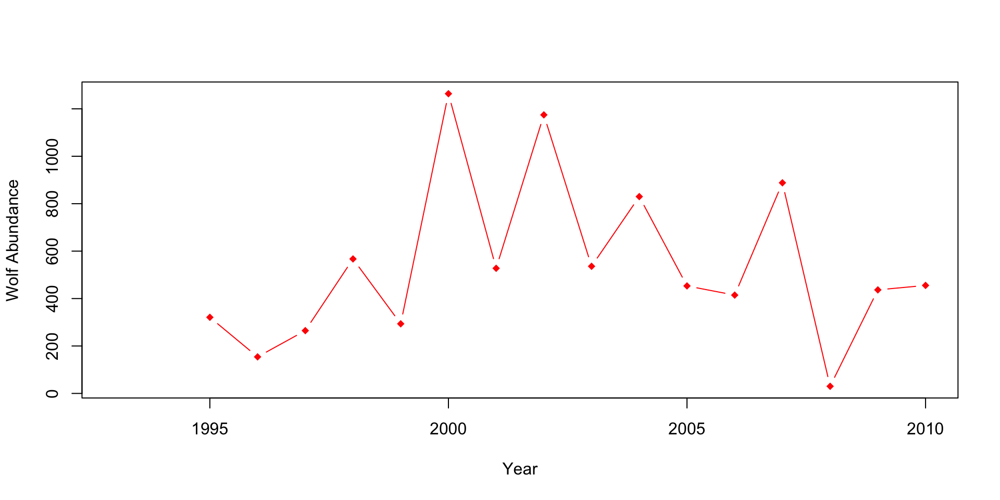
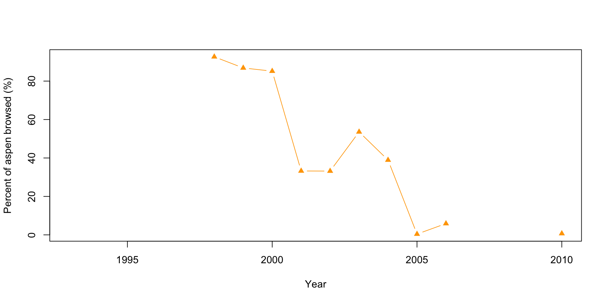
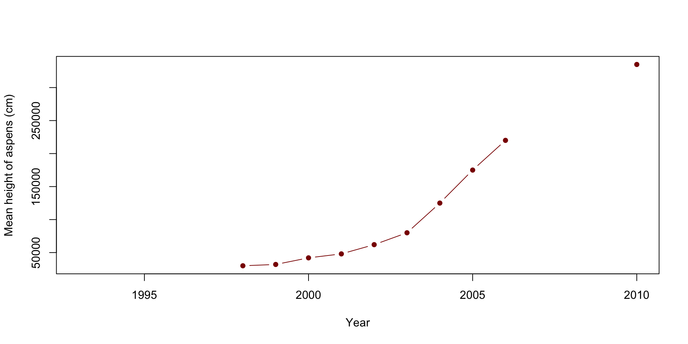
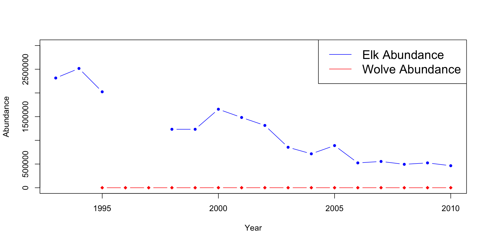
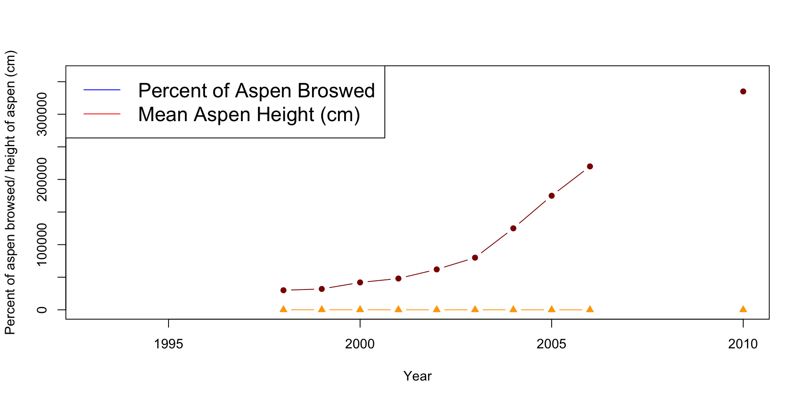
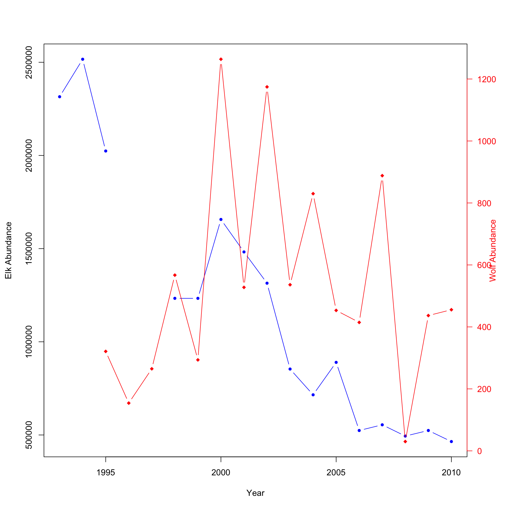
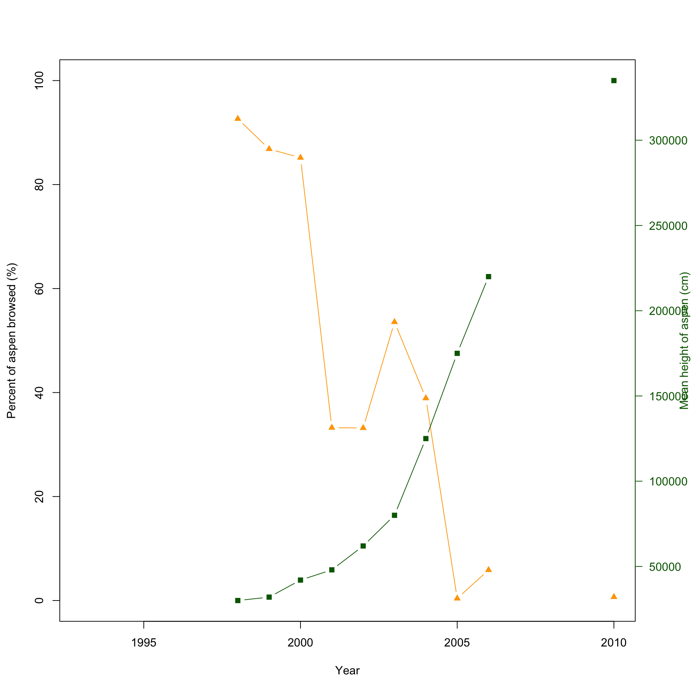
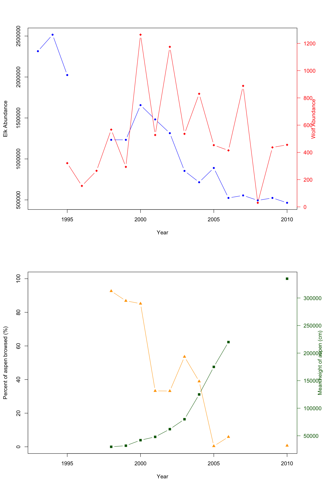

Chapter 3 Trophic Cascade
Take away from this handout: This hand out will provide several examples of code to plot data in different ways. There are countless methods to plot and graph data, however, not every type of graph is appropriate for every type of data.
Ensure that you use the provided data for this lab. Data presented in the graph is random fabricated data.
How to hand-in the lab
Throughout the handout example code will be provided. Use the provide R code to create your own RStudio script where you will do your work. Make sure to comment your code throughout. Develop your script to answer all of the questions and show your work. You must submit your own R code and any plots generated along with all your answers to this lab.
3.1 Lab 7
Before we start the lab, we first need to clear our workplace. Use the following lines to clear your workplace and start fresh. This line of code should be used at the start everytime you start a new R script or want to start fresh before running code.
Importing the CSV Now that we have a clean work space, import the data into R. You cannot directly copy the following line of code for it to work. The location of the data on my computer is different from the location on your computer.
df <- read.csv(file = "lab_data/lab7/lab_7_CSV_data.csv")
# df is a commonly used abbreviation for data frame and used widely within R and R Studio
# community. 3.1.1 Method 1: Producing four separate plots
Method 1 is the most simple. This method produces four separate plots, each representing one species or type of data. This method is similar to what was done for previous labs. While this method is the simplest, it can be challenging to understand the scale or the relationship when several plots are required.
# Plot 1: Elk abundance
plot(x=df$Year, y=df$Elk.Abundance, pch=20, col="blue", type ="b",
xlab="Year",
ylab="Elk Abundance") 
# The pch= determines the shape of the point and type="b" tells R to plot with both points and lines
# Plot 2: Wolves abundance
plot(x=df$Year, df$Wolf.abundance, type="b", col="red", pch=18,
xlab="Year",
ylab="Wolf Abundance") 
# Plot 3: Percent aspen browsed
plot(x=df$Year, y=df$X..Aspen.browsed, pch=17, col="orange",
type="b",
xlab="Year",
ylab="Percent of aspen browsed (%)")
# Plot 4: Mean height of aspen
plot(x=df$Year, y=df$Mean.aspen.height..cm., type="b", pch=16, col="darkred",
xlab="Year",
ylab="Mean height of aspens (cm)")
When looking at the graphs above, can you quickly and easily compare the elk and wolf populations’ abundance? What about the relationship between the percent of aspens browsed and their mean height? Do you think this is an effective method? Also, think about how you would present these plots.
3.1.2 Method 2: Producing two separate plots on the same y-axis
This method combines the elk plot with the wolves’ abundance, and the percent aspens browsed and the mean height plots. This method can be effective when the abundances are relatively close to each other but becomes less effective the further they get. It also isn’t practical when you’re plotting two or more scales/units.
# Creating the first plot
plot(x=df$Year, y=df$Elk.Abundance, pch=20, col="blue", type ="b",
xlab="Year",
ylab="Abundance",
ylim=c(0, 3000000)) # You first plot the specie's abundance. When doing so, make sure
# you change the ylim so that the second specie's data will be shown.
points(x=df$Year, df$Wolf.abundance, type="b", col="red", pch=18) # Use the points
# commend to add the second specie's abundance/data.
legend("topright", legend=c("Elk Abundance", "Wolve Abundance"), lty=1,
col=c("blue", "red"), cex=1.5)
# Repeat the above steps to produce the second plot.
plot(x=df$Year, y=df$X..Aspen.browsed, pch=17, col="orange",
type="b",
xlab="Year", ylab="Percent of aspen browsed/ height of aspen (cm)",
ylim=c(0,360000))
points(x=df$Year, y=df$Mean.aspen.height..cm., type="b", pch=16,
col="darkred")
legend("topleft", legend=c("Percent of Aspen Broswed",
"Mean Aspen Height (cm)"), lty=1, col=c("blue", "red"), cex=1.5)
Can you see how the wolf population changes overtime? It appears to stay constant, but is this the case? What issues do you see with the aspen plot? Are they the same scale/units?
3.1.3 Method 3: Producing two separate double y-axis plots
Method 3 is significantly more difficult than the plots above but shows considerably more detail and is easier to follow. The difficulty comes with the amount of information R requires to produce the final graph. All the code will be provided below and commented throughout. Pay close attention to the comments, and try to understand what every line is doing. Other plotting packages such as GGPlot2 are more straightforward but require a more advanced understanding of R and R Studio.
# This method works by layering two different plots atop of each other. Therefore,
# there is a of information above the dementions of the plot that R needs to know.
# This will produce the first plot
par(mar = c(5, 4, 4, 4) + 0.3) # This tells R the demintions of the plot and
# produces extra room for the second y-axis
# The par function sets and adjust the plotting parameters.
plot(x=df$Year, y=df$Elk.Abundance, pch=20, col="blue", type ="b",
xlab="Year",
ylab="Elk Abundance")
# pch is the different points/shapes that R used to represent the data
# type tells R what we want the line to look like. It can be "l" for line,
# "p" for points or "b" for both.
par(new = TRUE) # Tells R to add the new data overtop of the previous one. The
# defult for this line is FALSE. When set to TRUE the next level of plotting
# should not clear the previous one.
plot(x=df$Year, y=df$Wolf.abundance, pch=18, col="red",
type = "b",
axes = FALSE,
bty = "n",
xlab = "", ylab = "") # A different pch shape type was used for this plot.
# What section of the code does this?
# We kept both the xlab and the ylab empty, this is since the x-axis is the same
# as the elk data, and we will create the y-axis below
mtext("Wolf Abundance", side=4, col="red", line=2) # This line creates the
# label for the second axis.
# The side=4 tells R to place it on the right side, or the fourth side, of
# the plot
axis(4, ylim=range(df$Wolf.abundance), col="red", col.axis="red",las=1) # This 
# line creates the axis information itself.
# ylim=range(df$Wolf.adbundance) tells R to produce the axis to the same length
# or range as the wolf abundance data.
# Lets produce the second plot.
par(mar = c(5, 4, 4, 4) + 0.3) # Again, we need to tell R to shape the plot
# slightly different to allow extra space for the other axis
plot(x=df$Year, y=df$X..Aspen.browsed, pch=17, col="orange",
type="b",
xlab="Year", ylab="Percent of aspen browsed (%)",
ylim=c(0,100)) #The first plot
# A different shape type was used again for this plot. Do you know what you
# would change to have all shapes/points the same?
par(new = TRUE) # Informs R that another plot is being added.
plot(x=df$Year, y=df$Mean.aspen.height..cm., pch=15, col="darkgreen",
type = "b",
axes = FALSE,
bty = "n",
xlab = "", ylab = "") # This is the full code for the second plot
# We kept both the xlab and the ylab empty, this is since the x-axis is the
# same as the aspen consumed percent, and we will create the y-axis below
mtext("Mean height of aspen (cm)",side=4,col="darkgreen",line=3) # This line
# creates the label for the second axis.
# The side=4 tells R to place it on the right side, or the fourth side, of the
# plot
axis(4, ylim=range(df$Mean.aspen.height..cm.), col="darkgreen",
col.axis="darkgreen", las=1) # This line creates the
Notice that it is now easier to compare the abundance of elk and wolves or the relationship between percent aspen browsed and the mean height (cm). Using double y-axises, you can easily plot two species with significantly different abundances and see how both change over time or plot related data with different units. This would be a good method to plot the provided data. You can easily look between the plot to see how the introduction of wolves affects the elk population; then compare it to the aspen plot. But wouldn’t it be better if there was a method to plot both? There is!
3.1.4 Method 4: Produce two double y-axis plots atop of each other
This method is very similar to the one above but adds a layer of difficulty. There is only one additional line needed to combine the two plots.
par(mfrow=c(2,1)) # First we want to tell R the layout we want for the plot.
# The first argument or number specifies the number of rows and the second the
# number of columns.
# This method works by layering two different plots atop of each other. Therefore,
# there is a of informaiton above the dementions of the plot that R needs to know.
# This will produce the first plot
par(mar = c(5, 4, 4, 4) + 0.3) # This tells R the demintions of the plot and
# produces extra room for the second y-axis
plot(x=df$Year, y=df$Elk.Abundance, pch=20, col="blue", type ="b",
xlab="Year",
ylab="Elk Abundance") # The first plot
# pch is the different points/shapes that R used to represent the data
# type tells R what we want the line to look like. It can be "l" for line,
# "p" for points or "b" for both.
par(new = TRUE) # Tells R to add the new data overtop of the previous one
plot(x=df$Year, y=df$Wolf.abundance, pch=18, col="red",
type = "b",
axes = FALSE,
bty = "n",
xlab = "", ylab = "") # A different shape type was used for this plot.
# What section of the code does this?
# We kept both the xlab and the ylab empty, this is since the x-axis is the
# same as the elk data, and we will create the y-axis below
mtext("Wolf Abundance", side=4, col="red", line=2) # This line creates the
# label for the second axis.
# The side=4 tells R to place it on the right side, or the fourth side, of
# the plot
axis(4, ylim=range(df$Wolf.abundance), col="red", col.axis="red",las=1) # This
# line creates the axis information itself.
# ylim=range(df$Wolf.adbundance) tells R to produce the axis to the same length
# or range as the wolf abundance data.
# See! It is a lot of code, but can you see that it's basically creating two plots,
# and overlaying them?
# Lets produce the second plot.
par(mar = c(5, 4, 4, 4) + 0.3) # Again, we need to tell R to shape the plot slightly
# different # to allow extra space for the other axis
plot(x=df$Year, y=df$X..Aspen.browsed, pch=17, col="orange",
type="b",
xlab="Year", ylab="Percent of aspen browsed (%)",
ylim=c(0,100)) #The first plot
# A different shape type was used again for this plot. Do you know what you would
# change to have all shapes/points the same?
par(new = TRUE) # Informs R that another plot is being added.
plot(x=df$Year, y=df$Mean.aspen.height..cm., pch=15, col="darkgreen",
type = "b",
axes = FALSE,
bty = "n",
xlab = "", ylab = "") # This is the full code for the second plot
# We kept both the xlab and the ylab empty, this is since the x-axis is the
# same as the aspen consumed percent, and we will create the y-axis below
mtext("Mean height of aspen (cm)",side=4,col="darkgreen",line=3) # This line
# creates the label for the second axis.
# The side=4 tells R to place it on the right side, or the fourth side,
# of the plot.
axis(4, ylim=range(df$Mean.aspen.height..cm.), col="darkgreen",
col.axis="darkgreen", las=1) # This line creates the
Here is the final combined plot! It’s easier to show and compare the abundance of both the elk and wolf population, and the relation with the percent aspen broswed and the mean height of aspen in cm.